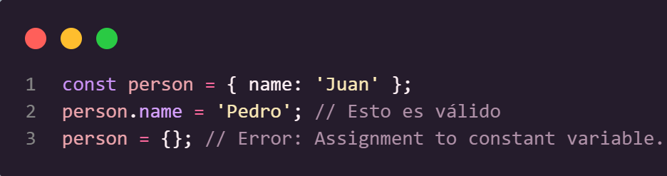

Historia de Javascript
JavaScript nació en 1995 de la mano de Brendan Eich, quien lo creó en solo 10 días mientras trabajaba en Netscape. Su objetivo era hacer que las páginas web fueran más interactivas, ya que en ese entonces solo mostraban texto e imágenes estáticas.
💡 Al principio se llamó Mocha, luego LiveScript, y finalmente JavaScript para aprovechar la popularidad de Java (aunque no tienen nada que ver).
- 1996-1999: Microsoft lo copia y lo llama JScript. Esto crea caos porque cada navegador lo interpreta diferente.
- 1999-2009: Llega AJAX, permitiendo que las páginas se actualicen sin recargarse. Ahí nacen Gmail y Google Maps, revolucionando la web.
- 2009: Se lanza Node.js, permitiendo ejecutar JavaScript fuera del navegador. Ahora, con JS se puede crear servidores, apps móviles y hasta inteligencia artificial.
Sintaxis y Variables
JavaScript es un lenguaje de programación interpretado que se integra en un documento HTML mediante la etiqueta <script>, ubicada antes del cierre de </body>.
Se considera una buena practica finalizar las lineas con punto y coma ;
Variables y valores
Se declara/inicializa/crea una variable usando las palabras reservadas VAR LET o CONST y asignandole un nombre.

Variable: Espacio de memoria destinado a almacenar datos que se utilizaran en el programa. Un contenedor de informacion
Valores: Es lo que se asocia a las variables.
- LET: Fue introducido en ES6 (ECMAScript 2015) y es más moderno y flexible. Es el más recomendado para declarar variables que puedan cambiar su valor a lo largo del tiempo. Tiene un alcance (scope) local, lo que significa que solo es accesible dentro del bloque de codigo en el que se define. Si se intenta usar la variable ANTES DE SU DECLARACION, da error. Se usa cuando se necesite una variable cuyo valor puede VARIAR y reasignarse.
-
CONST: Al contrario de var y let, CONST no varía su valor, su valor es CONSTANTE. Cuando se ejecuta el programa el valor de la constante NO CAMBIA. Se puede modificar cuando el programa no se encuentra en ejecución. Esto no significa que el valor sea inmutable (por ejemplo, los objetos y arrays pueden cambiar), sino que la referencia a la variable no puede cambiar. Tiene un alcance (scope) local. Usar const para declarar variables que no deben cambiar.
Si se declara un objeto o array con const no se puede reasignar la referencia al objeto o array, pero sí se puede modificar sus propiedades o elementos
 - VAR: Es la manera tradicional de declarar variables en JavaScript, pero no se recomienda debido a sus limitaciones y comportamiento a veces inesperado. Tiene un alcance (scope) de función (si se define dentro de una función SOLO ES ACCESIBLE DENTRO DE ESA FUNCION). Si se define fuera de cualquier funcion, sera global (incluso si se encuentra dentro de un bloque como un
ifofor). Si se usa una variable var antes de declararla NO da error, pero su valor seraundefinedhasta que se ejecute la asignacion.var es útil para mantener código legado o cuando se necesita compatibilidad con versiones antiguas de JavaScript.
Tipos de datos
String (Cadena de texto)
Number (Números enteros o decimales)
Boolean (Booleanos / valores verdaderos o falsos)
Undefined (Variable declarada sin valor asignado)

Null (Representa un valor "vacío" o "nulo")

Tipos de datos complejos
Objeto
Almacena clave: valor entre llaves { } y las propiedades se separan con coma ,
Array (Arreglos)
Tipo de objeto que almacena una LISTA DE VALORES entre corchetes [ ]
Funcion
Bloque de codigo que se puede reutilizar llamando por el nombre de la funcion
Date (Fecha)
Tipo de objeto para manejar fechas y horas